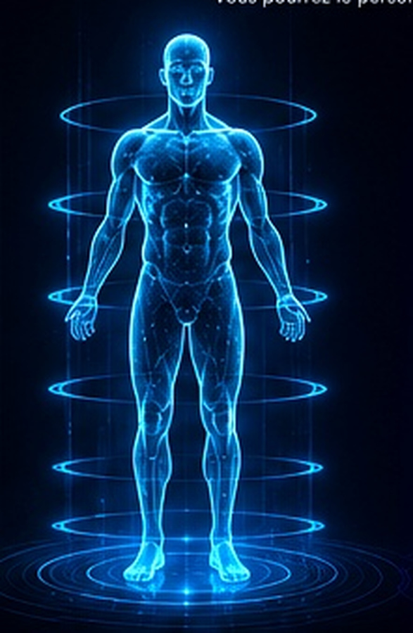

Tournez votre téléphone horizontalement pour profiter du visuel complet.
Sélectionnez Homme ou Femme.
ATLAS OS
GENESIS 4.0
ATLAS INDEX
82
/100

Avatar Homme actif
CHRONOLOGIE DU JUMEAU
MOTEUR ATLAS
Module
Contenu du module.